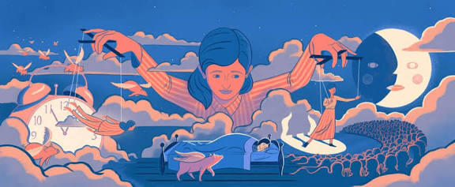
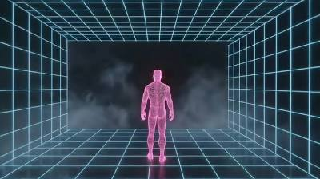

حقائق علمية غريبة عن الدماغ
تجارب بين الواقع والخيال، ما يفعله دماغك وراء الكواليس يفوق خيالك
هل فكرت يوما كم معلومة تعرفها عن الدماغ؟
دماغ الإنسان أكثر تعقيدًا مما نتخيله. فهو لا يدرك كل ما يحدث بداخله، ويخفي الكثير من العمليات التي تؤثر على تفكيرنا، مشاعرنا، وقراراتنا اليومية. في هذه الصفحة، سنستعرض مجموعة من الحقائق العلمية المثيرة عن الدماغ، التي قد تبدو غريبة أو غير متوقعة، وتكشف قدرة العقل على خلق الواقع، تخزين الذكريات، وحتى خداع وعينا أحيانًا. ستكتشف كيف يعمل الدماغ خلف الكواليس، وما الذي يجعله أعقد آلة في الكون.
عندما يخلق الدماغ واقعا غير موجود
الحلم الواعي

تخيل نفسك داخل حلم مليء بالتفاصيل الدقيقة، كل شيء يبدو حقيقيًا، من الأصوات المحيطة إلى شعور الهواء على بشرتك وربما حتى التذوق. فجأة، تدرك أنك تحلم… هذا هو الحلم الواعي، حالة نادرة تجعل دماغك يقظًا جزئيًا، بحيث يمكنك أحيانًا تحريك الأشياء، تغيير المكان، أو حتى الطيران كما تشاء. العلماء يؤكدون أن هذه الظاهرة تحدث طبيعيًا لدى بعض الأشخاص، ويمكن تعلمها تدريجيًا، مما يتيح لك فرصة مواجهة مخاوفك، تجربة مغامرات مستحيلة، أو ممارسة مهاراتك وكأنك تعيش التجربة بالفعل. الحلم الواعي ليس مجرد خيال، بل نافذة مذهلة على قدرات دماغك الخفية التي لم تكتشفها بعد.
الذكرى المزيفة
أحيانًا تعتقد أنك تتذكر حدثًا حدث في حياتك، لكن الواقع قد يكون مختلفًا تمامًا. هذه هي الذكرى المزيفة، ظاهرة تجعل دماغك يخلط بين الواقع والخيال، ويملأ الفراغات بتفاصيل لم تحدث أبدًا. تشعر وكأن الحدث حقيقي، مع كل المشاعر والحواس المرتبطة به، وكأنك تعيش التجربة من جديد. العلماء اكتشفوا أن هذا يحدث طبيعيًا لدى معظم الأشخاص، وأن دماغنا يعيد كتابة الذكريات باستمرار، مضيفًا أو يحذف تفاصيل دون أن نشعر. التعرف على هذه الظاهرة يفتح نافذة على فهم كيفية تخزين المعلومات، قوة العقل على خلق الواقع، وكيف يمكن لذاكرتنا أن تخدعنا أحيانًا بطريقة مذهلة وغير متوقعة.
الحضور الوهمي

تخيل أنك في مكان هادئ، وفجأة تشعر بوجود شخص أو كيان خلفك رغم أن الغرفة فارغة تمامًا. هذا ما يطلق عليه العلماء “الحضور الوهمي”، حيث يخلق الدماغ إحساسًا قويًا بوجود آخر دون أي مؤشرات حقيقية. قد تشعر بحركة خفيفة، ظل، أو حتى نظرة، وكل هذه الإحساسات تبدو حقيقية لدرجة أنك تتصرف وكأن شخصًا حقيقيًا موجود. الدراسات العصبية تؤكد أن هذه الظاهرة تحدث طبيعيًا لدى بعض الأشخاص، وأن الدماغ يمكنه توليد هذه التجارب بدقة مذهلة، ما يمنحك فرصة لفهم قدرته على خلق الواقع المحسوس وحتى التلاعب بالحواس بطريقة لم تتخيلها من قبل.
كيف يخلق دماغك عالمك الخاص:
دماغك ليس مجرد جهاز لتخزين المعلومات، بل مصنع معقد يصنع الواقع كما يراه مناسبًا.
كل تجربة تراها أو شعور تختبره هي نتيجة عمليات معقدة تحدث خلف الكواليس، غالبًا بدون أن تشعر بها.
من الحلم الواعي، الذي يمنحك القدرة على تجربة أشياء مستحيلة أثناء نومك مع إدراك جزئي لما يحدث، إلى الذكريات المزيفة التي قد تبدو حقيقية تمامًا رغم أنها لم تحدث، وصولًا إلى الإحساس بوجود شخص أو كيان غير موجود، كل هذه الظواهر تكشف قدرة دماغك على خلق تجارب ومشاعر تتجاوز الواقع ذاته.
فهم هذه الآليات يساعدك على التعرف على الطريقة التي تتشكل بها ذكرياتك، كيف تتأثر تصرفاتك، وحتى كيف تشكل إدراكك للعالم من حولك.
المعرفة بهذه العمليات تمنحك الفرصة لاستخدام قدرات دماغك بطريقة أكثر وعيًا، التحكم بتجاربك العقلية، واستكشاف حدود العقل البشري بطريقة مذهلة وواقعية.
للمزيد من المعلومات:
يمكن الرجوع إلى المراجع العلمية والأبحاث المتخصصة مثل كتاب "Lucid Dreaming" لـ Stephen LaBerge، وأبحاث Stumbrys, Erlacher, وSchredl عن طرق الحلم الواعي، أو أعمال Elizabeth Loftus و Daniel Schacter حول الذكريات المزيفة.
أما بالنسبة للحضور الوهمي، فقد أجريت دراسات مفصلة من قبل Oliver Blanke وزملائه عن التجارب خارج الجسد وآليات الدماغ في خلق الإحساس بالوجود.
بالإضافة إلى ذلك، توجد مواقع علمية موثوقة مثل Scientific American في قسم الدماغ والعقل، و Psychology Today حول الذاكرة والوعي، و Frontiers in Psychology في علوم الإدراك العصبي، يمكن للقراء زيارة هذه المواقع مباشرة للحصول على مقالات مبسطة وموثوقة.
للحصول على النسخ الأكاديمية من الكتب والأبحاث، يمكن البحث عنها عبر Google Scholar أو المكتبات الجامعية للوصول إلى الدراسات الأصلية.
فيديو توعوي
📹 Your Brain Hallucinates Your Conscious Reality – Anil Seth | TED